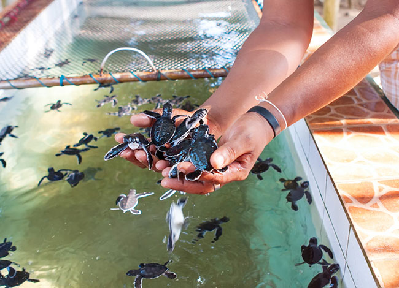
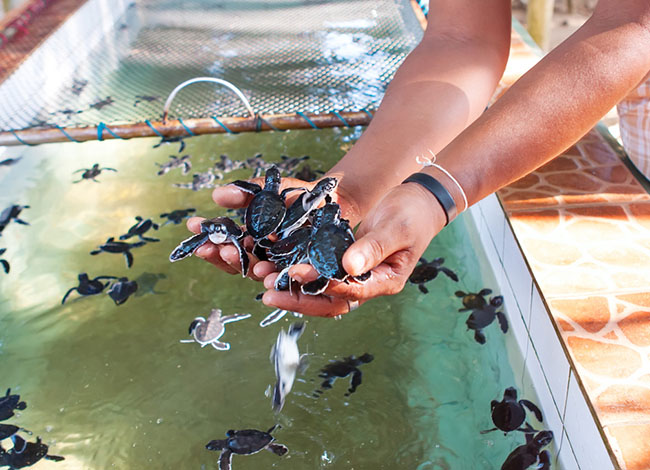
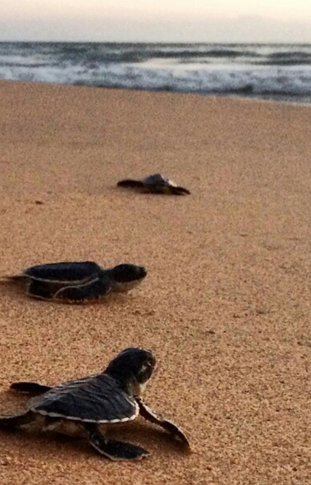
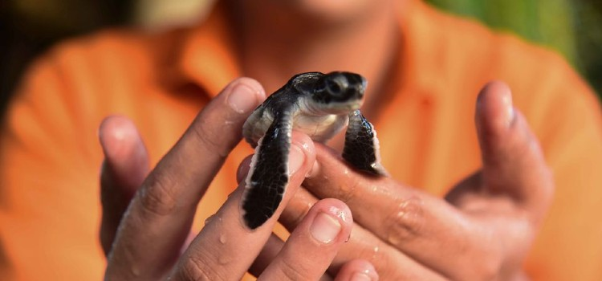
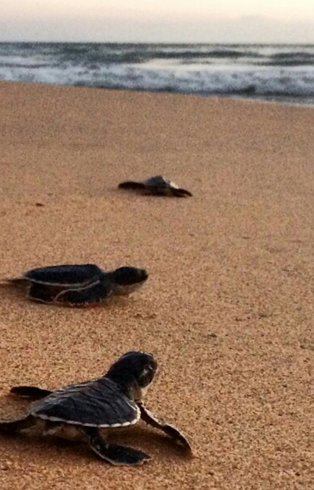
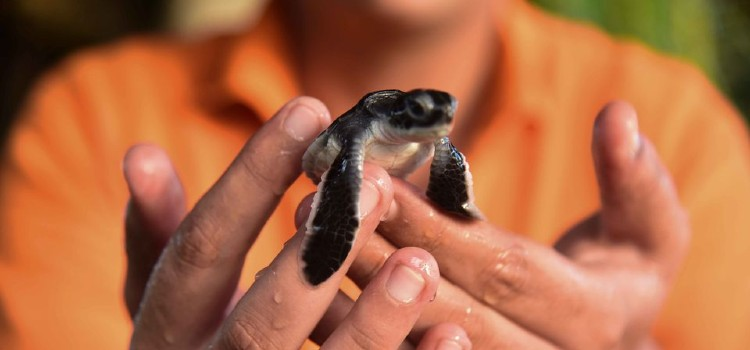

On Sri Lanka's southwest coast, the Bentota Turtle Hatchery acts as a refuge for the preservation of sea turtles. This well-known hatchery has been actively advocating the defense and preservation of these priceless species ever since it was established in 1981, when turtle conservation efforts first began. A number of different turtle species can be seen breeding and hatching on the spotless beaches that are a trademark of Bentota. Rare opportunities for interaction with these extinct reptiles and education about the challenges they face are provided to hatchery visitors. An key location for research, rehabilitation, and instruction is the hatchery. Through its commitment to environmental management and community involvement, the Bentota Turtle Hatchery has made significant strides toward preserving the delicate balance of maritime environments.
Gallery

 


 


